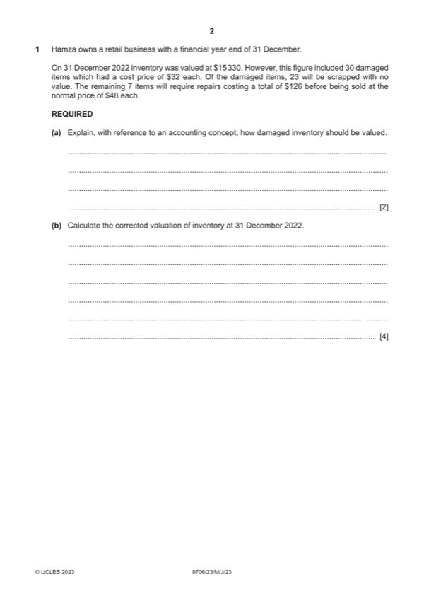

Question 1

Original paper page 2
Part 1(a) — solution
Explain, with reference to an accounting concept, how damaged 2
inventory should be valued.
Inventory should be valued at the lower of cost or net realisable value (1) in
accordance with the prudence concept (1)
Mark points
- Include the ideas shown in the solution above.
Part 1(b) — solution
Calculate the corrected valuation of inventory at 31 December 2022. 4
$
Original value 15 330
Damage (960) (1)
Sales 336 (1)
Repairs (126) (1) 210
Mark points
- Include the ideas shown in the solution above.
Part 1(c) — solution
Answer: 195 910 · 181 330 · 113 320
- W1 Rent: $17 000 + (2/3 $5100) = $20 400 (1)
- W2 Allowance for irrecoverable debts: 5% ($18 460 – $760) = $885 (1)
- W3 Depreciation: Addition $650 + Original ($20% $29 500) $5900 (1) =
Mark points
- W1 Rent: $17 000 + (2/3 $5100) = $20 400 (1)
- W2 Allowance for irrecoverable debts: 5% ($18 460 – $760) = $885 (1)
- W3 Depreciation: Addition $650 + Original ($20% $29 500) $5900 (1) =
Part 1(d) — solution
State the double entry required to record goods withdrawn by an 2
owner for personal use.
Debit: drawings (1)
Credit: purchases (1)
2023 Page 8 of 16
9706/23 Cambridge International AS & A Level – Mark Scheme May/June 2023
Mark points
- Include the ideas shown in the solution above.
Part 1(e) — solution
Advise Hamza which option he should choose. Justify your answer by 7
considering both financial and non-financial factors.
Max 3 marks for Option A
Max 3 marks for Option B
Decision supported by a comment (1)
Option A (max 3)
Cost of sales will be reduced leading to improved gross profit (1)
But:
Can larger orders be stored? / cost of storing large orders (1)
Will goods deteriorate while stored? (1)
Will new supplier’s goods be of the same quality? (1)
Will supplier be reliable? (1)
Option B (max 3)
Will increase gross profit only if demand is maintained (1)
But:
Advertising costs will reduce net profit (1)
Will advertising be effective? (1)
Increase in selling price may reduce demand (1)
Accept other valid responses.
2023 Page 9 of 16
9706/23 Cambridge International AS & A Level – Mark Scheme May/June 2023
Mark points
- Include the ideas shown in the solution above.
Part 1 — solution
230 1 230
Mark points
- Include the ideas shown in the solution above.